Dynamic Time Warping (DTW)
The distance between two point 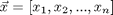 and 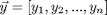 in a n-dimensional space can be computed via the Euclidean distance:
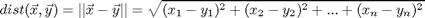
However, if the length of x is different from y, then we cannot use the above formula to compute the distance. Instead, we need a more flexible method that can find the best mapping from elements in x to those in y in order to compute the distance.
The goal of dynamic time warping (DTW for short) is to find the best mapping with the minimum distance by the use of dynamic programming. The method is called "time warping" since both x and y are usually vectors of time series and we need to compress or expand in time in order to find the best mapping.
Contents
Basic concept
Let t and r be two vectors of lengths m and n, respectively. The goal of DTW is to find a mapping path 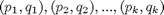 such that the distance on this mapping path 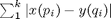 is minimized, with the following constraints:
- Boundary conditions: 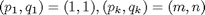. This is a typical example of "anchored beginning" and "anchored end".
- Local constraint: For any given node (i, j) in the path, the possible fan-in nodes are restricted to (i-1, j), (i, j-1), (i-1, j-1). This local constraint guarantees that the mapping path is monotonically non-decreasing in its first and second arguments. Moreover, for any given element in t, we should be able to find at least one corresponding element in r, and vice versa.
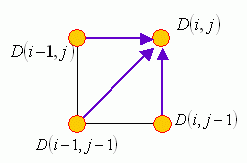
How can we find the optimum mapping path in DTW? An obvious choice is forward DP, which can be summarized in the following three steps:
- Optimum-value function: Define D(i, j) as the DTW distance between t(1:i) and r(1:j), with the mapping path from (1, 1) to (i, j).
- Recursion: D(i, j) = ∣x(i) - y(j)∣ + min{D(i-1, j), D(i-1, j-1), D(i, j-1)}, with the initial condition D(1, 1) = ∣x(1) - y(1)∣.
- Final answer: D(m, n)
Another commonly used local path constraint is to set the fan-in of 27°-45°-63° only, as shown in the following figure:
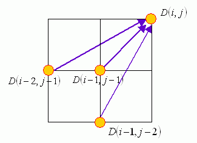
Examples
In the following, we shall give some examples of DTW. For simplicity, we shall distinguish two types of DTW:
- Type-1 DTW uses 27°-45°-63° local path constraint.
- Type-2 DTW uses 0°-45°-90° local path constraint.
First, we can use dtw.m (with dtwOpt.type=1) and dtwPathPlot.m to plot the mapping path of type-1 DTW in the following example:
vec1=[71 73 75 80 80 80 78 76 75 73 71 71 71 73 75 76 76 68 76 76 75 73 71 70 70 69 68 68 72 74 78 79 80 80 78]; vec2=[69 69 73 75 79 80 79 78 76 73 72 71 70 70 69 69 69 71 73 75 76 76 76 76 76 75 73 71 70 70 71 73 75 80 80 80 78]; dtwOpt=dtwOptSet; dtwOpt.type=1; [minDist, dtwPath, dtwTable] = dtw(vec1, vec2, dtwOpt); figure; dtwPathPlot(vec1, vec2, dtwPath);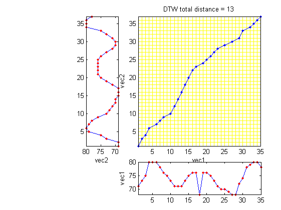
In the above example, we deliberately put an outliner in vec1. Due to the local path constraints of type-1 DTW, this outliner is skipped in the optimum mapping path.
Similarly, we can use dtw.m (with dtwOpt.type=2) and dtwPathPlot.m to plot the mapping path of type-2 DTW:
vec1=[71 73 75 80 80 80 78 76 75 73 71 71 71 73 75 76 76 68 76 76 75 73 71 70 70 69 68 68 72 74 78 79 80 80 78]; vec2=[69 69 73 75 79 80 79 78 76 73 72 71 70 70 69 69 69 71 73 75 76 76 76 76 76 75 73 71 70 70 71 73 75 80 80 80 78]; dtwOpt=dtwOptSet; dtwOpt.type=2; [minDist, dtwPath, dtwTable] = dtw(vec1, vec2, dtwOpt); figure; dtwPathPlot(vec1, vec2, dtwPath);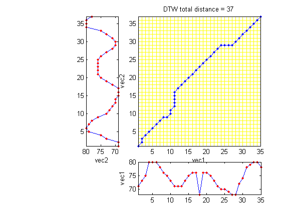
The outliner cannot be skipped since the local path constraints require each point in a vector has at least one correspondence in the other vector.
Visualization
By using dtwBridgePlot.m, we can use red lines to connect corresponding points in two vectors, as follows:
vec1=[71 73 75 80 80 80 78 76 75 73 71 71 71 73 75 76 76 68 76 76 75 73 71 70 70 69 68 68 72 74 78 79 80 80 78]; vec2=[69 69 73 75 79 80 79 78 76 73 72 71 70 70 69 69 69 71 73 75 76 76 76 76 76 75 73 71 70 70 71 73 75 80 80 80 78]; dtwOpt=dtwOptSet; dtwOpt.type=1; [minDist1, dtwPath1, dtwTable1] = dtw(vec1, vec2, dtwOpt); dtwOpt.type=2; [minDist2, dtwPath2, dtwTable2] = dtw(vec1, vec2, dtwOpt); subplot(2,1,1); dtwBridgePlot(vec1, vec2, dtwPath1); title('DTW alignment by type-1 DTW'); subplot(2,1,2); dtwBridgePlot(vec1, vec2, dtwPath2); title('DTW alignment by type-2 DTW');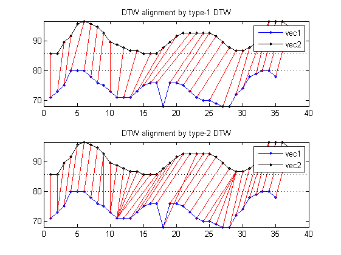
It becomes more obvious that type-1 DTW can have empty correspondence while type-2 DTW can have multiple correspondences. Moreover, we can use an extra argument for dtwBridgePlot.m to put the two vectors in 3D space to have a more interesting representation:
vec1=[71 73 75 80 80 80 78 76 75 73 71 71 71 73 75 76 76 68 76 76 75 73 71 70 70 69 68 68 72 74 78 79 80 80 78]; vec2=[69 69 73 75 79 80 79 78 76 73 72 71 70 70 69 69 69 71 73 75 76 76 76 76 76 75 73 71 70 70 71 73 75 80 80 80 78]; dtwOpt=dtwOptSet; dtwOpt.type=1; [minDist1, dtwPath1, dtwTable1] = dtw(vec1, vec2, dtwOpt); dtwOpt.type=2; [minDist2, dtwPath2, dtwTable2] = dtw(vec1, vec2, dtwOpt); subplot(2,1,1); dtwBridgePlot(vec1, vec2, dtwPath1, '3d'); title('DTW alignment by type-1 DTW'); view(-10, 70); subplot(2,1,2); dtwBridgePlot(vec1, vec2, dtwPath2, '3d'); title('DTW alignment by type-2 DTW'); view(-10, 70);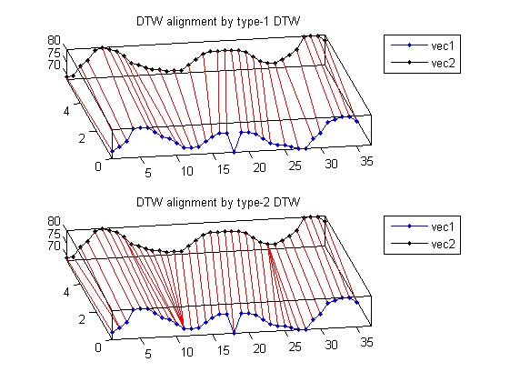
Copyright 2011-2012 Jyh-Shing Roger Jang.